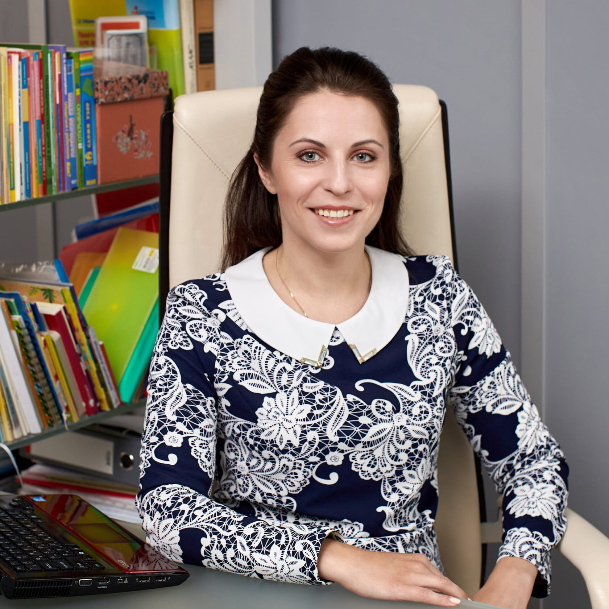
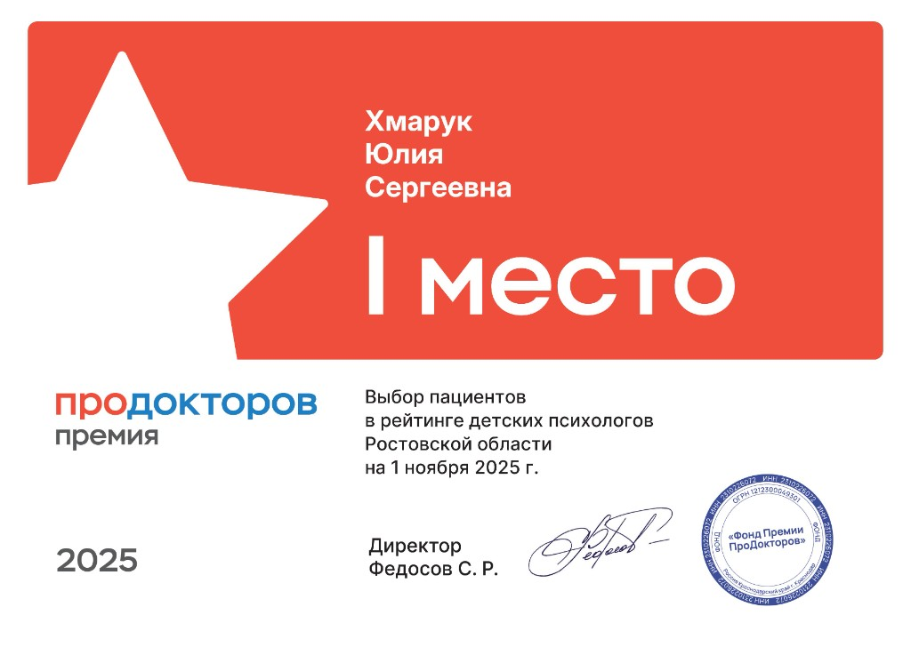

Клиническая психотерапия
Тревога, депрессия, панические атаки, ОКР, бессонница, СДВГ, психосоматика, СТОСН и др.
МПЦ «Нейролекс»
Меня зовут Хмарук Юлия Сергеевна. На этом сайте — кратко обо мне, услугах и записи на приём в клинике в Ростове-на-Дону (очно и онлайн).
МПЦ «Нейролекс» · клинический психолог
Я не предлагаю «позитивное мышление» и абстрактные советы. Сначала точная диагностика, затем научно обоснованные методы — чтобы вернуть контроль над жизнью.

Ведущий специалист МПЦ «Нейролекс»
Здравствуйте! Меня зовут Хмарук Юлия Сергеевна.
Ассистент кафедры психотерапии и медицинской психологии РостГМУ, MA in Counselling (The University of Manchester), медицинский психолог. Член Российской психотерапевтической ассоциации. Руковожу клинико-диагностическим отделением в медико-психологическом центре «Нейролекс».
Ведущий специалист в области медико-психологической помощи при психотравмах у детей, подростков и взрослых (после гибели близких, после ДТП и ЧС, домашнего насилия, измены, развода, разрыва и др.), а также в области нарушений сна, тревожности, страхов, гневливости, обиды, критики себя, тревоги за будущее и др.
Провожу психодиагностику и экспериментально-психологическое исследование (ЭПИ) с письменным заключением. Лауреат премии ПроДокторов 2025 в номинации «Лучший детский психолог г. Ростова-на-Дону и Ростовской области». Отзывы на ПроДокторов.
Дипломы, сертификаты и подтверждение образования
Полный комплект документов размещён на странице специалиста на сайте клиники «Нейролекс». Нажмите на изображение, чтобы открыть в полном размере.
Премия ПроДокторов 2025
Хмарук Юлия Сергеевна — лауреат Премии ПроДокторов 2025 в номинации «Выбор пациентов в рейтинге детских психологов Ростовской области» (по состоянию на 1 ноября 2025 г.).
Смотреть профиль и отзывы
Направления работы
Тревога, депрессия, панические атаки, ОКР, бессонница, СДВГ, психосоматика, СТОСН и др.
Глубокий анализ личности, когнитивной и эмоционально-волевой сферы, IQ, письменное заключение.
Нейропсихологическая диагностика и коррекция, особенности развития, рекомендации для родителей.
Конфликты в паре и с детьми, кризисы, беременность и рождение ребёнка, насилие в отношениях.
Утрата близких, сложные решения, самооценка, выгорание, профориентация.
Первичный приём: уточнение запроса, план работы. Очно — от 7 500 ₽, онлайн — от 8 500 ₽ (50 мин).
При острых состояниях, угрожающих жизни, обратитесь в службу экстренной помощи: 112 или телефон доверия 8-800-2000-122.
Диагностика, наука и реальные шаги
Прежде чем работать с проблемой, её нужно точно определить — проверенными психодиагностическими методиками.
Сочетаю клиническую, когнитивно-поведенческую, семейную терапию и SFBT (терапию, ориентированную на решение).
Только работающие техники, конкретные шаги и результат, который можно почувствовать.
Объясняю, что с вами происходит, и помогаю справиться — в вашем темпе, с опорой на факты.
Если вам важно понять себя, найти решение и вернуть контроль над жизнью — я помогу вам сделать этот шаг.
Медико-психологический центр в Ростове-на-Дону


Фото с официального сайта neurolex-center.ru
Клиника «Нейролекс», Ростов-на-Дону
344022, г. Ростов-на-Дону
Кировский пр-т, 48, 1 этаж
вход со стороны ул. Суворова
Пн–Сб: 10:00–20:00 · Вс: выходной
Очная консультация — от 7 500 ₽
Онлайн — от 8 500 ₽
Диагностика — от 11 000 ₽
Рейтинг 5.0 · 40 отзывов на ПроДокторов
Нейролекс — Кировский пр-т, 48, 1 этаж (вход со стороны ул. Суворова) Открыть в Яндекс Картах